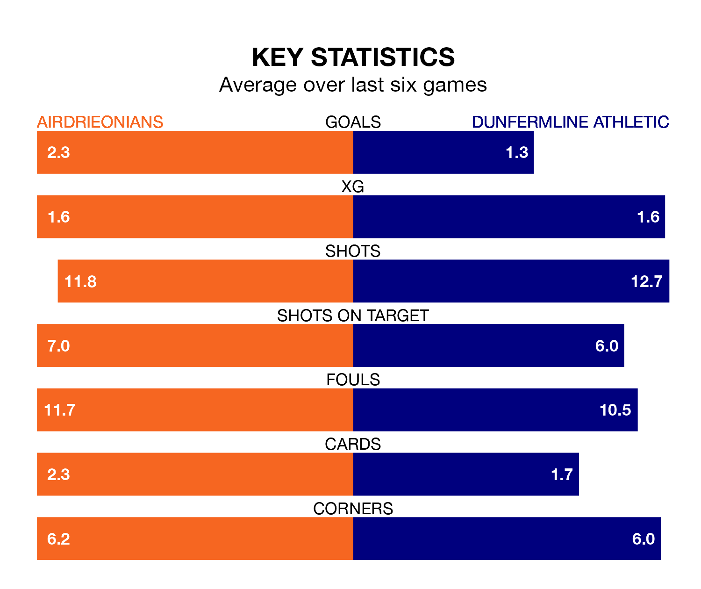

Airdrieonians host Dunfermline Athletic at the Excelsior Stadium on Saturday on the back of three consecutive wins in the Championship.
Airdrieonians have picked up 13 points from their last six games, and they face a Dunfermline side who drew their last match, and have collected 10 points from the last possible 18.
In Joshua Rae, Airdrieonians can rely on one of the league's safest pair of hands. He has kept nine clean sheets in his 26 appearances this season, and only one other 'keeper – Dundee United's Jack Walton – has been able to prevent the opposition scoring on more occasions in the Championship.
In Dunfermline's net, Deniz Mehmet has five clean sheets in 25 games. He has conceded a goal every 74 minutes, 20% more often than the 89 minutes between goals for Rae.
In the last 10 years, Airdrieonians and Dunfermline have played each other on 15 occasions. They won five each, and they drew five times.
On average, Airdrieonians scored 1.5 goals and Dunfermline 1.5 in those matches.
Their last meeting was on March 5, when Airdrieonians won 2-0 away.
With 38 goals in 32 games so far this season, Athletic are the league's third-lowest scorers with 1.2 goals per game. But they are conceding fewer than average too, letting in 42 goals at a rate of 1.3 per game.
The hosts are also below average scorers, with 1.3 goals per game, compared to a league average of 1.4. They have conceded 1.2 goals per game.
Airdrieonians are fourth in the table after 32 games, of which they have won 14 and drawn six, earning 48 points.
The away team are one place behind Airdrieonians in fifth, with 11 wins and nine draws putting them on 42 points.
Airdrieonians's last match was on Tuesday, a 3-1 win against Raith Rovers, with Adam Frizzell (two) and Lewis McGregor getting the goals for Airdrieonians.
Dunfermline drew 1-1 with Partick Thistle last time out, on April 6, with Chris Kane on the scoresheet.
Saturday's match will be refereed by Grant Irvine, who has taken charge of nine Championship games so far this season, issuing four red cards and booking 25 players. He has awarded two penalties.
The last Airdrieonians game Irvine refereed was a 2-0 away win against Dundee United on February 27. His last Dunfermline match was their 3-1 win at home against Greenock Morton on September 23.
Updated: 10:01 (UTC), 12/04/24